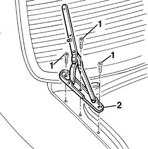

7025B22 l/h or r/h boot lid hinge (one) - r+r with lid removed
- Path
- Procedures > 70 FITTINGS > 7025 COMPARTMENT LIDS > 7025B boot lid > 7025B22 l/h or r/h boot lid hinge (one) - r+r with lid removed
- Kind
- repair procedure (removal / refitting; the operation number is the code)
- Applies to
- all engines; all production periods
- Interactive page
- https://sloeber94.github.io/elrnDB-a156/en/#/3238735
Applies to: all engines; all production periods
 Removing
Removing
 Refitting
Refitting- 7025B26 l/h or r/h boot lid lift device (one) - r+r
1. Unscrew the hinge.
2. Remove the hinge releasing it from the dope.

Applies to: all engines; all production periods
Refitting
RemovingCheck that the hinge is not damaged.
Reassemble the hinge.
Screw it without blocking the fastening screws.
- 7025B26 l/h or r/h boot lid lift device (one) - r+r
Tighten the screws to the pair prescribed.
 | Fastening | Component | Ø | Value (daNm) |
|---|---|---|---|---|
- | Bolt | BOOT LID HINGES | - | 1.1 - 1.3 |
Apply the dope between hinge and body.